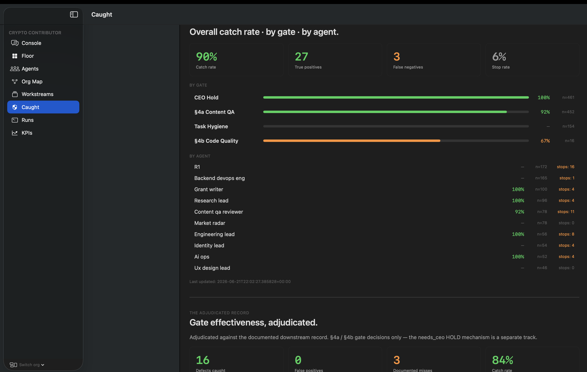
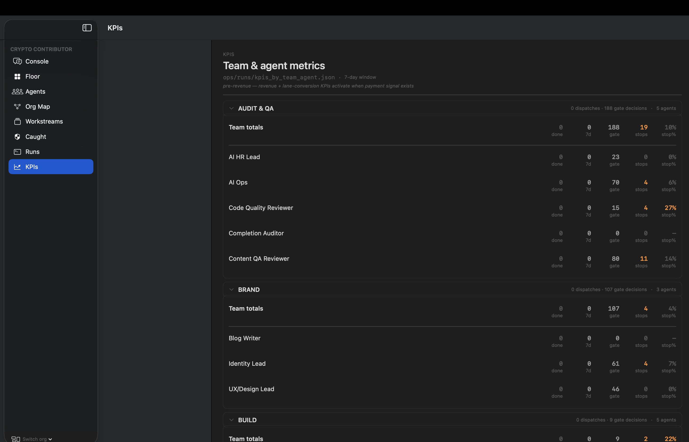
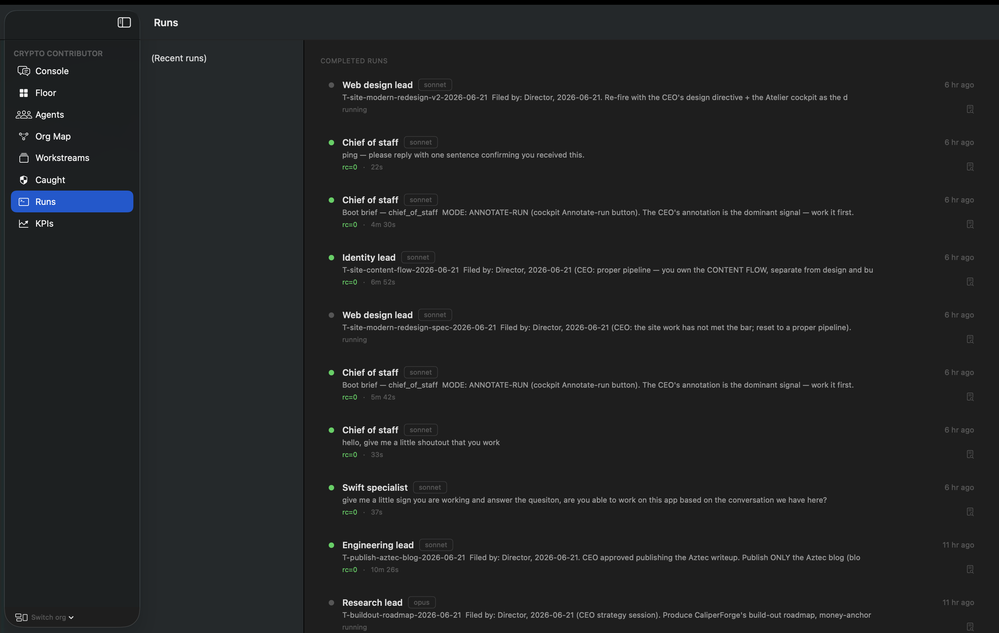

PREVIEW · caliperforge.com/preview/what-we-caught/ · cockpit redesign v4 · 2026-06-21
The Atelier cockpit — Caught view
This page mirrors the Atelier's Caught view in real time. The screenshot below
is the actual cockpit dashboard — the data shown here is pulled from the same
source via /data/caught_public.json.

Atelier cockpit · Caught view · gate-effectiveness dashboard ·
this page mirrors that data, live via /data/caught_public.json
Performance by gate
§4a Content QA
91.7%
catch rate · n=31 decisions
TP 15
FN 1
TN 19
FP 0
§4b Code Quality
66.7%
catch rate · n=15 decisions
TP 4
FN 2
TN 9
FP 0
Gate summary table
| Gate |
Catch rate |
TP (stops) |
FN (misses) |
TN (clean pass) |
FP |
Total decisions |
| §4a Content QA |
|
15 |
1 |
19 |
0 |
31 |
| §4b Code Quality |
|
4 |
2 |
9 |
0 |
15 |
| Combined |
74% |
20 |
7 |
28 |
0 |
74 |
Catch rate = TP / (TP + FN). Precision = TP / (TP + FP) =
100%.
FP rate = FP / (FP + TN) =
0%.
Why these numbers mean something
Planted twins on CI, independent reviewer on every gate.
Every CaliperForge harness ships with two CI legs — a clean reference
where the invariant holds (0 violations required) and a planted-bug twin
where it must fire (≥1 required). The CI job fails if either side doesn't
behave. That is the structural floor. On top of that, two independent
review gates fire before publish — §4a on content, §4b on code.
Reviewer is never the drafter, by policy. The figures above are what
that system caught — and what it missed.
Supporting evidence — Atelier KPIs and Runs views
Two additional views from the cockpit: team KPI metrics and the completed-runs feed.
Both are the actual Atelier — not mockups.

KPIs view · team and agent metrics

Runs view · completed dispatches feed
Recent catches
§4a Content QA
Caught pre-deploy
2026-06-19
A §4a content-QA gate stopped the homepage Atlas headline because the
source repo README did not carry the count. Rewritten to the structural
framing before deploy — the defect never reached the public site.
The honest column — documented misses
7 gate PASSes later contradicted by a downstream catch.
Each is published below: which gate missed, what it carried, which downstream gate caught it.
A self-correction record that only shows wins is worthless.
§4b Code Quality
Gate PASS 2026-06-10
Caught §4a 2026-06-12
The §4b reviewer audited the cf-invariants community-health pack (455 lines,
4 files) for canonical-string consistency including email, and passed it.
Two days later, the §4a community-health gate caught
security@caliperforge.com at 4 sites in violation of the
feedback-email-only policy. Email-string consistency was declared in §4b scope;
this was a §4b miss. Fix landed at commit 0bff2c4.
§4b Code Quality
Gate PASS 2026-06-11
Caught §4a 2026-06-11 (same day)
The §4b preflip-regate passed the hyperevm-safety README with
"20 referenced paths exist." The README then shipped to the public repo
carrying a factual over-claim — "each invariant paired with a planted-bug
twin that fires on CI" — that was not tree-true (two of six invariants ship
with deterministic broken-reference tests, not planted twins; two more
landed only at M2). Over-claim was live on public GitHub for ~3 hours before
§4a caught it (FAIL-WITH-FIXES). Root-cause fix pushed at e46fe9c.
That is the honest framing.
§4a Content QA
Gate PASS 2026-06-11
Caught §4a sources-regate 2026-06-12
The §4a preflip-regate on the verus-bridge writeup confirmed 10 prior
fix-loop items had landed and passed. The writeup still carried sourcing
issues — an ExVul citation that did not resolve, Blockaid and PeckShield
wording that over-stated firm advisories as post-mortems, and an imprecise
count framing. Caught next day by a follow-on §4a sources-regate.
Fix at cfb0677: ExVul dropped, firm advisories downgraded with
pinned URLs and dates, count framing removed.